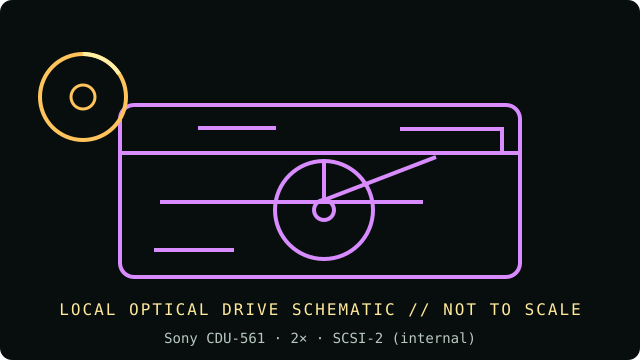

[ INDIVIDUAL COMPONENT // OPTICAL DRIVES ]
Sony CDU-561
Internal 2× Sony CDU-561 CD-ROM reader for a narrow SCSI host. Rated speed is a manufacturer class maximum, not a guaranteed sustained transfer rate. Verify the exact label and revision before acquisition or installation.

IDENTIFICATION: Sony CDU-561 · confirm the complete unit label, suffix/OEM number and revision; this reader-only record does not claim writing capability.
Documented specifications
| Catalog subcategory | CD-ROM readers |
|---|---|
| Exact product identifier | Sony CDU-561 |
| Era / product type | mid-1990s internal CD-ROM reader |
| Media / read and write support | CD-ROM Modes 1 and 2, CD-DA, CD-I Ready, CD-XA, High Sierra, ISO-9660 and multisession Photo CD; it does not write discs. |
| Rated read speed | 2× maximum CD-ROM read; peak rating, not a guaranteed sustained rate. No recording is supported. |
| Interface / mechanics | 50-pin narrow SCSI-2-compatible interface; Internal 5.25-inch half-height, caddy-loading on CDU-561-10/-25 variants; confirm the suffix and required caddy from the exact unit. |
| Host compatibility | Use a compatible 50-pin SCSI host adapter, assign a unique bus ID and terminate only at the physical bus ends. CDU-561 variants may require a disc caddy; confirm the suffix. IDE/ATAPI cabling does not apply. |
| Model distinction | CDU-561 is a 2× reader (not 8×); -10 and -25 variants use caddy loading. Preserve the full suffix and match the caddy to the drive. |
Media and preservation notes
A CD-ROM reader is not a CD writer. Optical-disc condition, reflectivity, errors, firmware and host software all affect practical readability; a speed label alone cannot establish a successful preservation read.
- Inspect the disc for cracks, delamination or contamination before spinning; handle only by its edge or center hole.
- Record the exact model and firmware, host/controller, software, media type, retries and read/verification errors; retain a checksum-verified image and acquisition log.
- Store source media in protective cases in a clean, cool, dry and dark environment. Preserve an unmodified original and use verified copies for access.
Installation and compatibility checks
- Use a compatible SCSI host adapter, assign a unique SCSI ID and terminate the bus only at its physical ends. Host adapter firmware and OS drivers are needed; IDE/ATAPI cables do not apply.
- Preserve the CDU-561 label and any revision marking; do not substitute settings from a similarly named Sony CDU family member.
- Compare the drive label and manual revision before applying speed, media or jumper claims; OEM variants may differ even when the front bezel is similar.
Documentation, standards and preservation references
- Sony CDU-561 optical-drive cardModel settings, SCSI-2 interface, 2× rate and supported CD formats.
- Sony CDU561-25 2× SCSI CD-ROM listingExact variant reference for speed, caddy-based loading and narrow SCSI connection.
- Ecma International — ECMA-130 CD-ROM standardCD-ROM physical format reference; it does not certify a drive revision or guarantee every media read.
- NIST — Care and handling of CDs and DVDsOptical-media preservation guidance; not a drive-specific specification.
Model-specific formats and interface notes are based on the references listed above. Match those references to the complete unit label and revision; listed support does not guarantee a successful read from every aged or recordable disc.